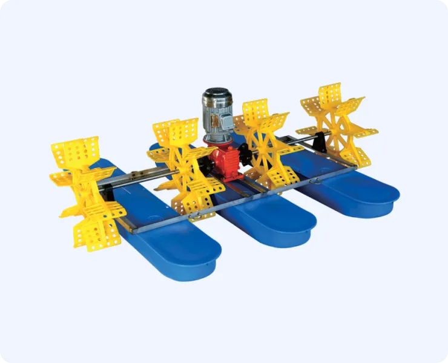

Аэраторы для пруда
Лопастной аэратор SC-3.0, 3.5 кг/ч, 3000 Вт, для пруда до 1,0га
Цена и наличие
- 1 шт.4 356,68 BYN / шт.В наличии
Данные на 23.11.2026.
Характеристики
- Бренд
- SunSun
- Тип аэратора
- лопастной
- Для прудов
- до 1 га
- Мощность
- 3000 Вт
- Производительность
- 3.5 кг/ч
- Для прудов
- до 1.0 га
- Количество лопастных колес (шт)
- 8
- Мощность (Вт)
- 3000
- Напряжение (В)
- 380
- Площадь орошения (м2)
- 5-15
- Скорость передачи кислорода (кг/кВт.ч)
- 1,5
- Производительность (кг/час)
- 3.5 кг/ч
- Уровень шума (дБ)
- 80
- Вес (кг)
- 125
- Страна
- Китай
Описание
Аэратор обогащает воду кислородом, создает движение воды в пруду, в результате чего обеспечивается оптимальное развитие бактерий и восстанавливается биологическое равновесие, и предотвращается мор рыбы.
АЭРАТОР ДЛЯ ПРУДА ЛОПАСТНОЙ SC-3.0, 3000 ВТ, 380 В Плавающие колесно-лопастные аэраторы отлично разбрызгивают воду, создавая огромное множество мелких брызг обеспечивающих прекрасный контакт воды с воздухом. Одновременно образуется направленное течение.Таким образом, смесь воздуха и воды уносится течением, обеспечивая эффективный массообмен в водоеме. Активный воздух и течение обеспечивают очень хорошее обогащение кислородом застойных зон.При этом также происходит дегазация, с удалением азота, двуокиси углерода, сероводорода и других газов. Плавающие колесно-лопастные аэраторы предназначены для рыборазведения и используются на самых разных водоемах, улучшая качество воды и среду обитания рыб. Аэраторы не требуют обслуживания. Лопастные колеса вращаются сравнительно медленно и лишь слегка погружаются в воду, поэтому в большинстве случаев защитные решетки не требуются. Специально созданная конструкция, дает возможность легко перемещать аэратор на желаемое место. Относительно небольшой вес создают дополнительные преимущества. Закрепление и якорение устройства не вызывает затруднений. Этого можно добиться путем V-образного крепления веревкой или при помощи одной веревки между берегом и корпусом аэратора. Можно также закрепить аэратор с помощью вертикального шеста воткнутого через отверстие в ручке в дно водоема. Это позволяет легко установить и снять агрегат на Вашем водоеме. Плавающие колесно-лопастные аэраторы легко собираются и разбираются, это позволяет компактно хранить аэратор в течении зимнего периода. Колеса с лопастями вращаются от надежного электромотора, который благодаря плавающей платформе постоянно находится над водой. Вращение от двигателя передается посредством редуктора. Это гарантирует очень надежную работу в течение чрезвычайно длительной непрерывной эксплуатации и минимальное потребление электроэнергии. Колеса с лопастями в этих аэраторах имеют хорошо защищенные подшипники скольжения и плавно вращаются на оси из нержавеющей стали. Все крепежные детали и винты, изготавливаются только из нержавеющей стали. Плавающая платформа и корпус изготовлены из очень качественной прочной пластмассы (нейлон). Лопастные колеса были специально разработаны для целей аэрации. Они создают очень хорошее течение. Эти специальные лопасти легко прикрепляются к колесам. Конфигурация лопастей и колес гарантирует оптимальную циркуляцию воды и разбрызгивание её с минимумом затрат электрической энергии. Очень высокая степень насыщения воды кислородом, эффективная дегазация в сочетании с сильным течением это преимущества данной конструкции. Лопасти аэраторов очень прочные, имеют гидродинамические очертания, изготовлены из высококачественного нейлона.